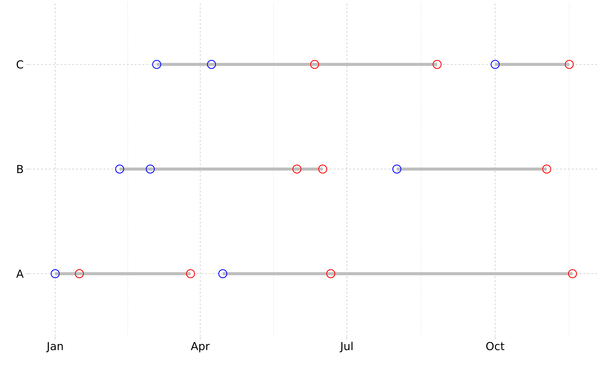
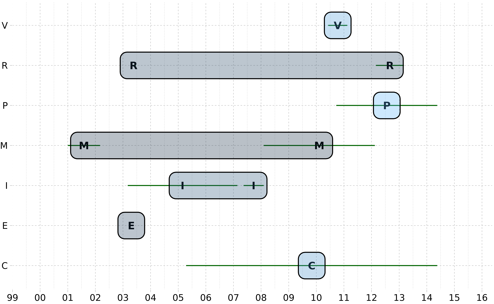

Interval Vectors in R with ivs
Find ranges of dates when an apartment is empty
Adapted from this ivs
example
- Convert to dates rather than date-times
- Add 1 to
end_dateto make ranges that match[, ), which is whativswants (and makes more sense here) - For each apartment, compute the interval complement with
iv_set_complement(). These are the empty dates (it keeps in mind any overlaps) - Bind the complement with the original data and sort
The end dates in the final result will be +1 vs what is in your
desired_outcome but I find these interval problems are
easier to think about if you use right open intervals,
[, ).
example_dates <- structure(
list(
apartment = c("A", "A", "A", "A", "B", "B", "B", "C", "C", "C"),
start_date = structure(
c(
1640995200, 1642291200, 1649980800, 1655769600, 1644451200,
1646092800, 1659312000, 1646438400, 1649376000, 1664582400
),
class = c("POSIXct", "POSIXt"),
tzone = "UTC"
),
end_date = structure(
c(
1642204800, 1648166400, 1655683200, 1668643200, 1655251200,
1653868800, 1667260800, 1654819200, 1661385600, 1668470400
),
class = c("POSIXct", "POSIXt"),
tzone = "UTC"
),
status = c(
"person in apartment", "person in apartment", "person in apartment",
"person in apartment", "person in apartment", "person in apartment",
"person in apartment", "person in apartment", "person in apartment",
"person in apartment"
)
),
class = c("tbl_df", "tbl", "data.frame"),
row.names = c(NA, -10L)
)
# Convert dates to dates rather than date-times
example_dates <- example_dates |>
mutate(start_date = as.Date(start_date),
end_date = as.Date(end_date)) |>
mutate(end_date = end_date + 1) # Make `end_date` exclusive
example_dates#> # A tibble: 10 × 4
#> apartment start_date end_date status
#> <chr> <date> <date> <chr>
#> 1 A 2022-01-01 2022-01-16 person in apartment
#> 2 A 2022-01-16 2022-03-26 person in apartment
#> 3 A 2022-04-15 2022-06-21 person in apartment
#> 4 A 2022-06-21 2022-11-18 person in apartment
#> 5 B 2022-02-10 2022-06-16 person in apartment
#> 6 B 2022-03-01 2022-05-31 person in apartment
#> 7 B 2022-08-01 2022-11-02 person in apartment
#> 8 C 2022-03-05 2022-06-11 person in apartment
#> 9 C 2022-04-08 2022-08-26 person in apartment
#> 10 C 2022-10-01 2022-11-16 person in apartment
ggplot(example_dates) +
geom_linerange(aes(xmin = start_date,
xmax = end_date,
y = apartment), linewidth = 1.25, color = "grey") +
geom_point(aes(x = start_date, y = apartment),
colour = "blue",
#fill = "black",
#stroke = 1,
size = 3,
shape = 21) +
geom_point(aes(x = end_date, y = apartment), colour = "red",
#fill = "black",
size = 3,
shape = 21) +
ggthemes::geom_rangeframe() +
ggthemes::theme_pander() +
labs(x = "", y = "")
# Combine start/end into an interval vector
example_dates2 <- example_dates |>
mutate(range = iv(start_date, end_date), .keep = "unused")
example_dates2#> # A tibble: 10 × 3
#> apartment status range
#> <chr> <chr> <iv<date>>
#> 1 A person in apartment [2022-01-01, 2022-01-16)
#> 2 A person in apartment [2022-01-16, 2022-03-26)
#> 3 A person in apartment [2022-04-15, 2022-06-21)
#> 4 A person in apartment [2022-06-21, 2022-11-18)
#> 5 B person in apartment [2022-02-10, 2022-06-16)
#> 6 B person in apartment [2022-03-01, 2022-05-31)
#> 7 B person in apartment [2022-08-01, 2022-11-02)
#> 8 C person in apartment [2022-03-05, 2022-06-11)
#> 9 C person in apartment [2022-04-08, 2022-08-26)
#> 10 C person in apartment [2022-10-01, 2022-11-16)
# Compute the complement per apartment
empty_dates <- example_dates2 |>
group_by(apartment) |>
summarise(range = iv_set_complement(range)) |>
mutate(status = "apartment empty")
empty_dates#> # A tibble: 3 × 3
#> apartment range status
#> <chr> <iv<date>> <chr>
#> 1 A [2022-03-26, 2022-04-15) apartment empty
#> 2 B [2022-06-16, 2022-08-01) apartment empty
#> 3 C [2022-08-26, 2022-10-01) apartment empty
# Bind and sort
apt_dates <- bind_rows(example_dates2, empty_dates) |>
arrange(apartment, range) |>
mutate(start_date = iv_start(range),
end_date = iv_end(range),
.keep = "unused")
apt_dates#> # A tibble: 13 × 4
#> apartment status start_date end_date
#> <chr> <chr> <date> <date>
#> 1 A person in apartment 2022-01-01 2022-01-16
#> 2 A person in apartment 2022-01-16 2022-03-26
#> 3 A apartment empty 2022-03-26 2022-04-15
#> 4 A person in apartment 2022-04-15 2022-06-21
#> 5 A person in apartment 2022-06-21 2022-11-18
#> 6 B person in apartment 2022-02-10 2022-06-16
#> 7 B person in apartment 2022-03-01 2022-05-31
#> 8 B apartment empty 2022-06-16 2022-08-01
#> 9 B person in apartment 2022-08-01 2022-11-02
#> 10 C person in apartment 2022-03-05 2022-06-11
#> 11 C person in apartment 2022-04-08 2022-08-26
#> 12 C apartment empty 2022-08-26 2022-10-01
#> 13 C person in apartment 2022-10-01 2022-11-16Group hospital patient stay dates
Adapted from this ivs
example
df <- tribble(
~Patient.ID, ~Admitted.Date, ~Discharge.Date,
810L, "2020-12-15", "2020-12-16",
810L, "2021-06-17", "2021-06-19",
810L, "2021-06-19", "2021-06-27",
810L, "2021-06-27", "2021-07-03"
) |>
mutate(Admitted.Date = as.Date(Admitted.Date),
Discharge.Date = as.Date(Discharge.Date))
df#> # A tibble: 4 × 3
#> Patient.ID Admitted.Date Discharge.Date
#> <int> <date> <date>
#> 1 810 2020-12-15 2020-12-16
#> 2 810 2021-06-17 2021-06-19
#> 3 810 2021-06-19 2021-06-27
#> 4 810 2021-06-27 2021-07-03
# Create an interval vector combining the hospital stay as:
# [Admitted.Date, Discharge.Date)
df <- df |>
mutate(Stay = iv(Admitted.Date, Discharge.Date), .keep = "unused")
df#> # A tibble: 4 × 2
#> Patient.ID Stay
#> <int> <iv<date>>
#> 1 810 [2020-12-15, 2020-12-16)
#> 2 810 [2021-06-17, 2021-06-19)
#> 3 810 [2021-06-19, 2021-06-27)
#> 4 810 [2021-06-27, 2021-07-03)
# Assuming you have multiple patients, we will group by `Patient.ID`.
# Then compute the non-overlapping interval "groups" per patient with `iv_groups()`
df |>
group_by(Patient.ID) |>
reframe(Stay = iv_groups(Stay))#> # A tibble: 2 × 2
#> Patient.ID Stay
#> <int> <iv<date>>
#> 1 810 [2020-12-15, 2020-12-16)
#> 2 810 [2021-06-17, 2021-07-03)
# You can also see which "group" each stay fell in by using `iv_identify_group()`
df |>
group_by(Patient.ID) |>
mutate(Group = iv_identify_group(Stay))#> # A tibble: 4 × 3
#> # Groups: Patient.ID [1]
#> Patient.ID Stay Group
#> <int> <iv<date>> <iv<date>>
#> 1 810 [2020-12-15, 2020-12-16) [2020-12-15, 2020-12-16)
#> 2 810 [2021-06-17, 2021-06-19) [2021-06-17, 2021-07-03)
#> 3 810 [2021-06-19, 2021-06-27) [2021-06-17, 2021-07-03)
#> 4 810 [2021-06-27, 2021-07-03) [2021-06-17, 2021-07-03)Find overlapping dates for each ID and create a new row for the overlap
I would like to find the overlapping dates for each ID and create a new row with the overlapping dates and also combine the characters (char) for the lines. It is possible that my data will have 2 overlaps and need 2 combinations of characters. eg. ERM
You can also use dplyr/tidyr along with the ivs package, which is a package dedicated to working with interval vectors like you have here. This allows you to combine your start/end dates into a single interval column and use a variety of iv_*() functions on it, here we use iv_identify_splits().
Understanding iv_identify_splits() can be a little tricky at first, so I’d encourage you to take a look at the graphical representation of that operation here.
df3 <- tribble(
~ID, ~date1, ~date2, ~char,
15L, "2003-04-05", "2003-05-06", "E",
15L, "2003-04-20", "2003-06-20", "R",
16L, "2001-01-02", "2002-03-04", "M",
17L, "2003-03-05", "2007-02-22", "I",
17L, "2005-04-15", "2014-05-19", "C",
17L, "2007-05-15", "2008-02-05", "I",
17L, "2008-02-05", "2012-02-14", "M",
17L, "2010-06-07", "2011-02-14", "V",
17L, "2010-09-22", "2014-05-19", "P",
17L, "2012-02-28", "2013-03-04", "R"
) |>
mutate(
date1 = as.Date(date1),
date2 = as.Date(date2),
days = trunc(as.integer(date2 - date1) / 2),
date_mid = date2 - lubridate::days(days)
)
# Combine the start/stop endpoints into a single interval vector
df3 <- df3 |>
mutate(interval = iv(date1, date2))
# Note that these are half-open intervals and you may need to adjust the end!
df3#> # A tibble: 10 × 7
#> ID date1 date2 char days date_mid interval
#> <int> <date> <date> <chr> <dbl> <date> <iv<date>>
#> 1 15 2003-04-05 2003-05-06 E 15 2003-04-21 [2003-04-05, 2003-05-06)
#> 2 15 2003-04-20 2003-06-20 R 30 2003-05-21 [2003-04-20, 2003-06-20)
#> 3 16 2001-01-02 2002-03-04 M 213 2001-08-03 [2001-01-02, 2002-03-04)
#> 4 17 2003-03-05 2007-02-22 I 725 2005-02-27 [2003-03-05, 2007-02-22)
#> 5 17 2005-04-15 2014-05-19 C 1660 2009-11-01 [2005-04-15, 2014-05-19)
#> 6 17 2007-05-15 2008-02-05 I 133 2007-09-25 [2007-05-15, 2008-02-05)
#> 7 17 2008-02-05 2012-02-14 M 735 2010-02-09 [2008-02-05, 2012-02-14)
#> 8 17 2010-06-07 2011-02-14 V 126 2010-10-11 [2010-06-07, 2011-02-14)
#> 9 17 2010-09-22 2014-05-19 P 667 2012-07-21 [2010-09-22, 2014-05-19)
#> 10 17 2012-02-28 2013-03-04 R 185 2012-08-31 [2012-02-28, 2013-03-04)
ggplot(df3) +
geom_segment(aes(y = char, yend = char, x = date1, xend = date2), color = "darkgreen") +
geom_text(aes(y = char, x = date_mid, label = char), fontface = "bold") +
# geom_point(aes(y = char, x = date_mid), shape = 23) +
ggforce::geom_mark_rect(aes(y = char, x = date_mid, fill = date_mid, group = char)) +
# ggforce::geom_mark_rect(aes(y = char, x = date2, fill = date2)) +
# ggthemes::theme_few() +
# ggthemes::extended_range_breaks() +
ggthemes::geom_rangeframe() +
ggthemes::theme_pander() +
scale_x_date(date_breaks = "1 year", date_labels = "%y", expand = c(0.15, 0.15)) +
labs(x = NULL, y = NULL) +
theme(legend.position = "none")
# For each ID, compute the "splits" for each interval.
# This splits on all the endpoints and returns a list column
df33 <- df3 |>
group_by(ID) |>
mutate(splits = iv_identify_splits(interval))
print(df33, n = 3)#> # A tibble: 10 × 8
#> # Groups: ID [3]
#> ID date1 date2 char days date_mid interval
#> <int> <date> <date> <chr> <dbl> <date> <iv<date>>
#> 1 15 2003-04-05 2003-05-06 E 15 2003-04-21 [2003-04-05, 2003-05-06)
#> 2 15 2003-04-20 2003-06-20 R 30 2003-05-21 [2003-04-20, 2003-06-20)
#> 3 16 2001-01-02 2002-03-04 M 213 2001-08-03 [2001-01-02, 2002-03-04)
#> # ℹ 7 more rows
#> # ℹ 1 more variable: splits <list<iv<date>>>
# Note how the total range of the splits vector matches the
# range of the corresponding interval
df33$interval[[1]]#> <iv<date>[1]>
#> [1] [2003-04-05, 2003-05-06)
df33$splits[[1]]#> <iv<date>[2]>
#> [1] [2003-04-05, 2003-04-20) [2003-04-20, 2003-05-06)
# From there we can unchop() the splits column so we can group on it
df33 <- df33 |> unchop(splits)
# Note how rows 2 and 3 have the same `splits` value, so `E` and `R` will
# go together
df33#> # A tibble: 30 × 8
#> # Groups: ID [3]
#> ID date1 date2 char days date_mid interval
#> <int> <date> <date> <chr> <dbl> <date> <iv<date>>
#> 1 15 2003-04-05 2003-05-06 E 15 2003-04-21 [2003-04-05, 2003-05-06)
#> 2 15 2003-04-05 2003-05-06 E 15 2003-04-21 [2003-04-05, 2003-05-06)
#> 3 15 2003-04-20 2003-06-20 R 30 2003-05-21 [2003-04-20, 2003-06-20)
#> 4 15 2003-04-20 2003-06-20 R 30 2003-05-21 [2003-04-20, 2003-06-20)
#> 5 16 2001-01-02 2002-03-04 M 213 2001-08-03 [2001-01-02, 2002-03-04)
#> 6 17 2003-03-05 2007-02-22 I 725 2005-02-27 [2003-03-05, 2007-02-22)
#> 7 17 2003-03-05 2007-02-22 I 725 2005-02-27 [2003-03-05, 2007-02-22)
#> 8 17 2005-04-15 2014-05-19 C 1660 2009-11-01 [2005-04-15, 2014-05-19)
#> 9 17 2005-04-15 2014-05-19 C 1660 2009-11-01 [2005-04-15, 2014-05-19)
#> 10 17 2005-04-15 2014-05-19 C 1660 2009-11-01 [2005-04-15, 2014-05-19)
#> # ℹ 20 more rows
#> # ℹ 1 more variable: splits <iv<date>>
# Group by (ID, splits) and paste the `char` column elements together
df33 |>
group_by(ID, splits) |>
summarise(char = paste0(char, collapse = ","), .groups = "drop")#> # A tibble: 15 × 3
#> ID splits char
#> <int> <iv<date>> <chr>
#> 1 15 [2003-04-05, 2003-04-20) E
#> 2 15 [2003-04-20, 2003-05-06) E,R
#> 3 15 [2003-05-06, 2003-06-20) R
#> 4 16 [2001-01-02, 2002-03-04) M
#> 5 17 [2003-03-05, 2005-04-15) I
#> 6 17 [2005-04-15, 2007-02-22) I,C
#> 7 17 [2007-02-22, 2007-05-15) C
#> 8 17 [2007-05-15, 2008-02-05) C,I
#> 9 17 [2008-02-05, 2010-06-07) C,M
#> 10 17 [2010-06-07, 2010-09-22) C,M,V
#> 11 17 [2010-09-22, 2011-02-14) C,M,V,P
#> 12 17 [2011-02-14, 2012-02-14) C,M,P
#> 13 17 [2012-02-14, 2012-02-28) C,P
#> 14 17 [2012-02-28, 2013-03-04) C,P,R
#> 15 17 [2013-03-04, 2014-05-19) C,PAggregate counts by month from start-stop ranged variables
enrollments <- tribble(
~unique_name, ~enrollment_start, ~enrollment_end,
"Amy", "1, Jan, 2017", "30, Sep, 2018",
"Franklin", "1, Jan, 2017", "19, Feb, 2017",
"Franklin", "5, Jun, 2017", "4, Feb, 2018",
"Franklin", "21, Oct, 2018", "9, Mar, 2019",
"Samir", "1, Jan, 2017", "4, Feb, 2017",
"Samir", "5, Apr, 2017", "12, Sep, 2018"
)
# Parse these into "day" precision year-month-day objects, then restrict
# them to just "month" precision because that is all we need
enrollments <- enrollments |>
mutate(
start = enrollment_start |>
year_month_day_parse(format = "%d, %b, %Y") |>
calendar_narrow("month"),
end = enrollment_end |>
year_month_day_parse(format = "%d, %b, %Y") |>
calendar_narrow("month") |>
add_months(1),
.keep = "unused"
)
enrollments#> # A tibble: 6 × 3
#> unique_name start end
#> <chr> <ymd<month>> <ymd<month>>
#> 1 Amy 2017-01 2018-10
#> 2 Franklin 2017-01 2017-03
#> 3 Franklin 2017-06 2018-03
#> 4 Franklin 2018-10 2019-04
#> 5 Samir 2017-01 2017-03
#> 6 Samir 2017-04 2018-10
# Create an interval vector, note that these are half-open intervals.
# The month on the RHS is not included, which is why we added 1 to `end` above.
enrollments <- enrollments |>
mutate(active = iv(start, end),
.keep = "unused")
enrollments#> # A tibble: 6 × 2
#> unique_name active
#> <chr> <iv<ymd<month>>>
#> 1 Amy [2017-01, 2018-10)
#> 2 Franklin [2017-01, 2017-03)
#> 3 Franklin [2017-06, 2018-03)
#> 4 Franklin [2018-10, 2019-04)
#> 5 Samir [2017-01, 2017-03)
#> 6 Samir [2017-04, 2018-10)
# We'll generate a sequence of months that will be part of the final result
bounds <- range(enrollments$active)
lower <- iv_start(bounds[[1]])
upper <- iv_end(bounds[[2]]) - 1L
months <- tibble(month = seq(lower, upper, by = 1))
months#> # A tibble: 27 × 1
#> month
#> <ymd<month>>
#> 1 2017-01
#> 2 2017-02
#> 3 2017-03
#> 4 2017-04
#> 5 2017-05
#> 6 2017-06
#> 7 2017-07
#> 8 2017-08
#> 9 2017-09
#> 10 2017-10
#> # ℹ 17 more rowsTo actually compute the counts, use iv_count_between(),
which counts up all instances where month[i] is between any
interval in enrollments$active
months |>
mutate(count = iv_count_between(month, enrollments$active))#> # A tibble: 27 × 2
#> month count
#> <ymd<month>> <int>
#> 1 2017-01 3
#> 2 2017-02 3
#> 3 2017-03 1
#> 4 2017-04 2
#> 5 2017-05 2
#> 6 2017-06 3
#> 7 2017-07 3
#> 8 2017-08 3
#> 9 2017-09 3
#> 10 2017-10 3
#> # ℹ 17 more rowsNumber of records open in a month, in dataset containing single records with start / end dates
ds <- data.frame(
record_id = c("00a", "00b", "00c"),
record_start_date = as.Date(c("2020-01-16", "2020-03-25", "2020-02-22")),
record_end_date = as.Date(c("2020-12-05", "2020-06-21", "2020-11-12"))
)
# Record the start and end months to generate the counts for
start <- date_start(min(ds$record_start_date), "year")
end <- date_end(max(ds$record_end_date), "year") + 1L
# Construct an interval vector
ds <- ds |>
mutate(
record_range = iv(record_start_date, record_end_date),
.keep = "unused"
)
ds#> record_id record_range
#> 1 00a [2020-01-16, 2020-12-05)
#> 2 00b [2020-03-25, 2020-06-21)
#> 3 00c [2020-02-22, 2020-11-12)
# Generate the months sequence to count along
result <- tibble(
month = date_seq(
from = start,
to = end,
by = duration_months(1)
)
)
# Count the number of times `month[[i]]` is between any of the
# ranges in `ds$record_range`
result |>
mutate(
count = iv_count_between(month, ds$record_range)
)#> # A tibble: 13 × 2
#> month count
#> <date> <int>
#> 1 2020-01-01 0
#> 2 2020-02-01 1
#> 3 2020-03-01 2
#> 4 2020-04-01 3
#> 5 2020-05-01 3
#> 6 2020-06-01 3
#> 7 2020-07-01 2
#> 8 2020-08-01 2
#> 9 2020-09-01 2
#> 10 2020-10-01 2
#> 11 2020-11-01 2
#> 12 2020-12-01 1
#> 13 2021-01-01 0Generate new variable based on start and stop date
tb <- read.table(header = T,
text = " Machine Start Stop ServiceType
1 XX 2014-12-04 NA AA
2 XX 2013-09-05 2013-11-05 BB
3 XX 2013-11-21 2014-09-25 BB
4 XX 2013-10-11 2014-11-18 BB
5 XX 2021-12-03 <NA> AA
6 XX 2020-08-06 2022-09-15 AA
7 XX 2021-06-10 <NA> BB
8 YY 2020-01-17 <NA> BB
9 YY 2015-11-04 2018-04-30 BB
10 YY 2016-05-28 2019-03-21 BB
11 YY 2019-09-27 <NA> BB
12 YY 2018-01-05 <NA> AA
")
tb#> Machine Start Stop ServiceType
#> 1 XX 2014-12-04 <NA> AA
#> 2 XX 2013-09-05 2013-11-05 BB
#> 3 XX 2013-11-21 2014-09-25 BB
#> 4 XX 2013-10-11 2014-11-18 BB
#> 5 XX 2021-12-03 <NA> AA
#> 6 XX 2020-08-06 2022-09-15 AA
#> 7 XX 2021-06-10 <NA> BB
#> 8 YY 2020-01-17 <NA> BB
#> 9 YY 2015-11-04 2018-04-30 BB
#> 10 YY 2016-05-28 2019-03-21 BB
#> 11 YY 2019-09-27 <NA> BB
#> 12 YY 2018-01-05 <NA> AA
tb|>
mutate(Stop = ifelse(Stop == "<NA>", Start, Stop),
across(c(Start, Stop), ymd),
Stop = if_else(Stop == Start, Stop + days(1), Stop),
ivs = iv(Start, Stop)) |>
group_by(Machine, gp = iv_identify_group(ivs)) |>
summarise(ServiceType = toString(unique(ServiceType)), .groups = "drop") |>
mutate(gp = iv_start(gp),
ServiceType = ifelse(ServiceType %in% c("BB, AA", "AA, BB"),
"CC", ServiceType))#> # A tibble: 6 × 3
#> Machine gp ServiceType
#> <chr> <date> <chr>
#> 1 XX 2013-09-05 BB
#> 2 XX 2020-08-06 CC
#> 3 XX NA AA
#> 4 YY 2015-11-04 CC
#> 5 YY 2019-09-27 BB
#> 6 YY 2020-01-17 BBAggregate Data by Month using start and end dates to calculate monthly disease prevelance
ddf <- data.frame(patid=c("1","2","3","4","5","6","7"),
start_date=c("01/03/2016","24/08/2016",
"01/01/2016","24/02/2016",
"24/04/2016","01/04/2016",
"01/09/2016"),
end_date=c("31/12/2016","31/12/2016",
"23/12/2016","01/08/2016",
"17/06/2016","04/05/2016",
"31/10/2016"),
disease=c("yes","no","yes","no",
"no","yes","yes"),
disease_date=c("15/08/2016",NA,
"15/08/2016",NA,NA,
"01/05/2016","31/10/2016"))
ddf#> patid start_date end_date disease disease_date
#> 1 1 01/03/2016 31/12/2016 yes 15/08/2016
#> 2 2 24/08/2016 31/12/2016 no <NA>
#> 3 3 01/01/2016 23/12/2016 yes 15/08/2016
#> 4 4 24/02/2016 01/08/2016 no <NA>
#> 5 5 24/04/2016 17/06/2016 no <NA>
#> 6 6 01/04/2016 04/05/2016 yes 01/05/2016
#> 7 7 01/09/2016 31/10/2016 yes 31/10/2016Here’s a solution that uses ivs (for interval vectors), clock (for month precision dates), and vctrs (for counting matches).
Note that ivs requires half-open intervals, which in practice means that we add 1 to our “end” months before creating the interval vector.
The real stars of the show are:
vec_count_matches() to count each time a month appeared in disease_date, which gives us our n_disease iv_count_between() to count each time a month fell between a range, which gives us our n_total
# Only need these cols
ddf <- ddf |>
select(start_date, end_date, disease_date)
# Turn into actual dates
ddf <- ddf |>
mutate(
across(everything(), \(col) {
date_parse(col, format = "%d/%m/%Y")
})
)
# We really only need month based information, so drop the days
ddf <- ddf |>
mutate(
across(everything(), \(col) {
calendar_narrow(as_year_month_day(col), "month")
})
)
# Turn the start/end dates into real ranges.
# Make them half-open ranges by adding 1 to the end date month
ddf <- ddf |>
mutate(range = iv(start_date, end_date + 1L), .keep = "unused", .before = 1)
ddf#> range disease_date
#> 1 [2016-03, 2017-01) 2016-08
#> 2 [2016-08, 2017-01) <NA>
#> 3 [2016-01, 2017-01) 2016-08
#> 4 [2016-02, 2016-09) <NA>
#> 5 [2016-04, 2016-07) <NA>
#> 6 [2016-04, 2016-06) 2016-05
#> 7 [2016-09, 2016-11) 2016-10
# Little helper to count the number of times each `needle` appears in `haystack`
vec_count_matches <- function(needles, haystack) {
out <- vec_rep(0L, times = vec_size(needles))
matches <- vec_locate_matches(needles, haystack, no_match = "drop")
result <- vec_count(matches$needles, sort = "location")
out[result$key] <- result$count
out
}
# Create a full sequence from min month to max month
from <- min(iv_start(ddf$range))
to <- max(iv_end(ddf$range))
tibble(
month = seq(from = from, to = to, by = 1),
n_disease = vec_count_matches(month, ddf$disease_date),
n_total = iv_count_between(month, ddf$range),
prevalence = n_disease / n_total
)#> # A tibble: 13 × 4
#> month n_disease n_total prevalence
#> <ymd<month>> <int> <int> <dbl>
#> 1 2016-01 0 1 0
#> 2 2016-02 0 2 0
#> 3 2016-03 0 3 0
#> 4 2016-04 0 5 0
#> 5 2016-05 1 5 0.2
#> 6 2016-06 0 4 0
#> 7 2016-07 0 3 0
#> 8 2016-08 2 4 0.5
#> 9 2016-09 0 4 0
#> 10 2016-10 1 4 0.25
#> 11 2016-11 0 3 0
#> 12 2016-12 0 3 0
#> 13 2017-01 0 0 NaNUpdate: And with the dev version of ivs (what will soon be 0.2.0), this is even easier with iv_diff() and iv_count_includes(), which means you don’t need the custom vec_count_matches() helper at all:
tibble(
month = iv_diff(seq(from = from, to = to, by = 1)),
n_disease = iv_count_includes(month, ddf$disease_date),
n_total = iv_count_overlaps(month, ddf$range, type = "within"),
prevalence = n_disease / n_total
)#> # A tibble: 12 × 4
#> month n_disease n_total prevalence
#> <iv<ymd<month>>> <int> <int> <dbl>
#> 1 [2016-01, 2016-02) 0 1 0
#> 2 [2016-02, 2016-03) 0 2 0
#> 3 [2016-03, 2016-04) 0 3 0
#> 4 [2016-04, 2016-05) 0 5 0
#> 5 [2016-05, 2016-06) 1 5 0.2
#> 6 [2016-06, 2016-07) 0 4 0
#> 7 [2016-07, 2016-08) 0 3 0
#> 8 [2016-08, 2016-09) 2 4 0.5
#> 9 [2016-09, 2016-10) 0 4 0
#> 10 [2016-10, 2016-11) 1 4 0.25
#> 11 [2016-11, 2016-12) 0 3 0
#> 12 [2016-12, 2017-01) 0 3 0Count instances of value within overlapping dates
I have a dataframe that includes start_date and end_date for a given unit_id along with the unit’s group.
data.frame(
unit_id = c(1, 2, 3),
start_date = as.Date(c("2019-01-01", "2019-02-05", "2020-01-12")),
end_date = as.Date(c("2019-02-06", "2019-02-28", "2020-01-30")),
group = c("pass", "fail", "pass")
)#> unit_id start_date end_date group
#> 1 1 2019-01-01 2019-02-06 pass
#> 2 2 2019-02-05 2019-02-28 fail
#> 3 3 2020-01-12 2020-01-30 passFor each unit_id, I need to calculate the proportion of all units that pass within the duration, start_date and end_date for the current unit_id.
Taking unit_id=1 as an example, I need to find all units that have start_date and/or end_date within the dates for unit 1, i.e. start_date = 2019-01-01 and end_date = 2019-02-06. Given my in_df, this would return two units, 1 and 2. One unit passes and one fails so the proportion of pass would be 0.5. desired_df shows the output I expect for this example.
data.frame(
unit_id = c(1, 2, 3),
start_date = as.Date(c("2019-01-01", "2019-02-05", "2020-01-12")),
end_date = as.Date(c("2019-02-06", "2019-02-28", "2020-01-30")),
group = c("pass", "fail", "pass"),
pass_prop = c(0.5, 0.5, 1)
)#> unit_id start_date end_date group pass_prop
#> 1 1 2019-01-01 2019-02-06 pass 0.5
#> 2 2 2019-02-05 2019-02-28 fail 0.5
#> 3 3 2020-01-12 2020-01-30 pass 1.0I think ivs can help you, but I think you might be looking for iv_locate_overlaps() here:
# Starting with the more complex example with the 4th row
in_df <- tibble(unit_id = c(1,2,3,4),
start_date = as.Date(c("2019-01-01","2019-02-05","2020-01-12","2019-02-20")),
end_date = as.Date(c("2019-02-06","2019-02-28","2020-01-30","2020-01-30")),
group = c("pass","fail","pass","pass"))
in_df <- in_df |>
mutate(range = iv(start_date, end_date), .keep = "unused")
in_df#> # A tibble: 4 × 3
#> unit_id group range
#> <dbl> <chr> <iv<date>>
#> 1 1 pass [2019-01-01, 2019-02-06)
#> 2 2 fail [2019-02-05, 2019-02-28)
#> 3 3 pass [2020-01-12, 2020-01-30)
#> 4 4 pass [2019-02-20, 2020-01-30)
# "find all units that have `start_date` and/or `end_date` within the dates for unit i"
# So you are looking for "any" kind of overlap.
# `iv_locate_overlaps()` does: "For each `needle`, find every location in `haystack`
# where that `needle` has ANY overlap at all"
locs <- iv_locate_overlaps(
needles = in_df$range,
haystack = in_df$range,
type = "any"
)
# Note `needle` 1 overlaps `haystack` locations 1 and 2 (which is what you said
# you want for unit 1)
locs#> needles haystack
#> 1 1 1
#> 2 1 2
#> 3 2 1
#> 4 2 2
#> 5 2 4
#> 6 3 3
#> 7 3 4
#> 8 4 2
#> 9 4 3
#> 10 4 4
# Slice `in_df` appropriately, keeping relevant columns needed to answer the question
needles <- in_df[locs$needles, c("unit_id", "range")]
haystack <- in_df[locs$haystack, c("group", "range")]
haystack <- rename(haystack, overlaps = range)
expanded_df <- bind_cols(needles, haystack)
expanded_df#> # A tibble: 10 × 4
#> unit_id range group overlaps
#> <dbl> <iv<date>> <chr> <iv<date>>
#> 1 1 [2019-01-01, 2019-02-06) pass [2019-01-01, 2019-02-06)
#> 2 1 [2019-01-01, 2019-02-06) fail [2019-02-05, 2019-02-28)
#> 3 2 [2019-02-05, 2019-02-28) pass [2019-01-01, 2019-02-06)
#> 4 2 [2019-02-05, 2019-02-28) fail [2019-02-05, 2019-02-28)
#> 5 2 [2019-02-05, 2019-02-28) pass [2019-02-20, 2020-01-30)
#> 6 3 [2020-01-12, 2020-01-30) pass [2020-01-12, 2020-01-30)
#> 7 3 [2020-01-12, 2020-01-30) pass [2019-02-20, 2020-01-30)
#> 8 4 [2019-02-20, 2020-01-30) fail [2019-02-05, 2019-02-28)
#> 9 4 [2019-02-20, 2020-01-30) pass [2020-01-12, 2020-01-30)
#> 10 4 [2019-02-20, 2020-01-30) pass [2019-02-20, 2020-01-30)
# Compute the pass proportion per unit
expanded_df |>
group_by(unit_id) |>
summarise(pass_prop = sum(group == "pass") / length(group))#> # A tibble: 4 × 2
#> unit_id pass_prop
#> <dbl> <dbl>
#> 1 1 0.5
#> 2 2 0.667
#> 3 3 1
#> 4 4 0.667